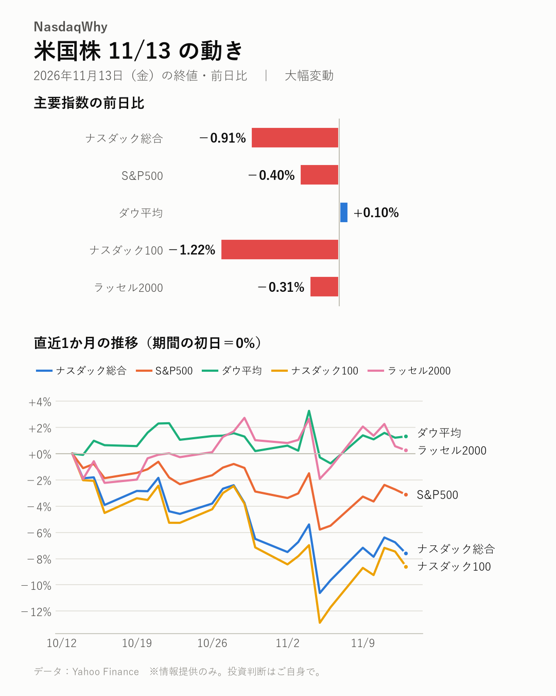
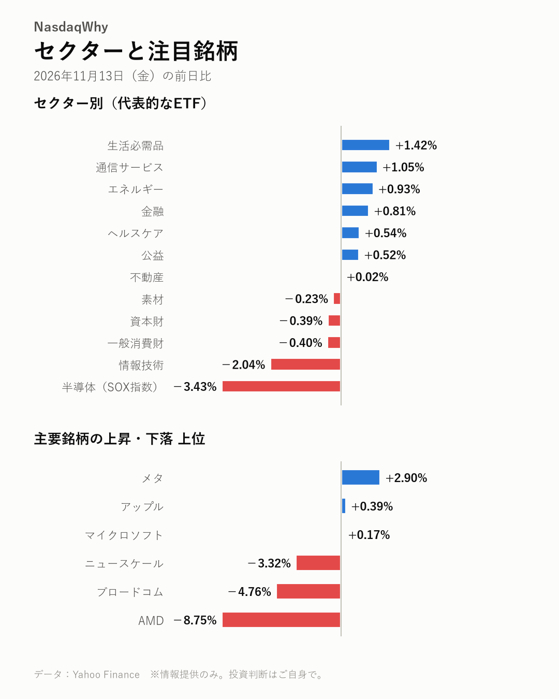

11/13の米国株：エヌビディアCEO辞任で急騰したAMD、なぜ一転急落した？
2026年11月13日（金）の米国市場（日本時間の翌朝更新） ｜ 大幅変動
今日の疑問
エヌビディアCEO辞任で急騰したAMD、なぜ一転急落した？
AMDは-8.75%と急落し、週前半の急伸から反転した。MarketWatchによると、エヌビディアの苦境が他社の得になるのかを投資家が考え直し始めた。マイケル・バーリ氏の半導体株の売り持ち増も重なったが、どれが主因かはまだ分からない。

主要指数
| 名前 | 終値 | 前日比 | 騰落率 |
|---|---|---|---|
| ナスダック総合 | 25,136.27 | -229.82 | -0.91% |
| S&P500 | 7,561.67 | -30.73 | -0.40% |
| ダウ平均 | 52,347.55 | +50.46 | +0.10% |
| ナスダック100 | 27,943.74 | -345.45 | -1.22% |
| ラッセル2000 | 2,790.49 | -8.57 | -0.31% |
なぜ動いた？
- エヌビディアCEO辞任を受けて急伸していたAMDやブロードコムが反転した。利益を確定する売りが膨らんだ。（出典：Yahoo Finance、24/7 Wall St.、Benzinga、Traders Union）
- MarketWatchによると、エヌビディアの苦境がライバルの得になるのか、投資家が見直し始めた。（出典：MarketWatch）
- 著名投資家マイケル・バーリ氏が半導体株の売り持ちを増やした。このことも重荷になった。（出典：Yahoo Finance、Yahoo Finance）
- エヌビディアにはアナリストの格下げが相次いだ。HBM供給元のSK hynixやマイクロンにも売りが広がった。（出典：Yahoo Finance、Yahoo Finance、Invezz）
深掘り：大きく動いた背景
週末の米国株は、半導体株の急落が重荷になった。SOX指数は-3.43%、ナスダック100は-1.22%。AMDは-8.75%と大きく下げ、ブロードコムも-4.76%と売られた。ダウ平均は+0.10%と小幅に上げ、指数の明暗が分かれた。 きっかけはエヌビディアのフアンCEOの辞任だ。辞任の発表後、AMDやブロードコムにはシェアを奪うとの期待から買いが集まった。両社の株価は週前半に急伸した。前日もBofAがAMDの目標株価を引き上げ、上昇が続いていた。その反動で、利益を確定する売りが一気に出た。 MarketWatchによると、投資家はエヌビディアの苦境がそのまま他社の得になるのかを考え直し始めた。マイケル・バーリ氏が半導体株の売り持ち（値下がりで利益が出る取引）を増やしたことも重荷になった。売りは、HBM（AI向けの高速メモリー）をエヌビディアに供給するSK hynixやマイクロンにも広がった。 別の見方もある。BofAは、AIエージェントがサーバー向けCPUの需要を押し上げるとみている。AMDの成長シナリオを評価する声は残る。ただ、株価が利益の何倍かを示すPERの高さを警戒する指摘も出ていた。 まだ分からないのは、エヌビディアの経営の混乱が、顧客の発注先選びにどこまで響くかだ。次はエヌビディアの決算で、需要の見通しを確かめたい。
セクター
SOX指数は-3.43%、情報技術は-2.04%と下げを主導した。生活必需品は+1.42%、通信サービスは+1.05%、金融は+0.81%と上げた。ただし、これらの上昇に明確な材料は見当たらない。
- 騰落率の高い順：生活必需品 +1.42%、通信サービス +1.05%、エネルギー +0.93%
- 騰落率の低い順：半導体（SOX指数） -3.43%、情報技術 -2.04%、一般消費財 -0.40%

注目銘柄
AMDは-8.75%、ブロードコムは-4.76%と急伸の反動で売られた。エヌビディアは格下げを受けて-2.01%、マイクロンは-2.52%。メタは+2.90%と逆行高だが、明確な材料は見当たらない。
- 上昇：メタ（META）+2.90%、アップル（AAPL）+0.39%、マイクロソフト（MSFT）+0.17%
- 下落：AMD（AMD）-8.75%、ブロードコム（AVGO）-4.76%、ニュースケール（SMR）-3.32%
半導体トピック
- エヌビディアの経営混乱を受け、HBM供給元のSK hynix株が下落した。（Yahoo Finance）
- CXMTがAIサーバー向けなど高付加価値のDRAM市場を狙う。（digitimes）
- SK hynixなどがOCPでHBM以外のAI向けメモリー設計を示した。（TOKENPOST、Crypto Briefing）
関連市場
| 名前 | 終値 | 前日比 | 騰落率 |
|---|---|---|---|
| 米10年債利回り | 5.154% | +0.051pt | ― |
| ドル円 | 159.71 | -0.02 | -0.01% |
| 金先物 | 3,878.20 | -7.10 | -0.18% |
| 原油先物(WTI) | 89.01 | +0.27 | +0.30% |
| ビットコイン | 68,358.74 | -2,984.23 | -4.18% |
米10年債利回りは+0.051ポイント上昇し、5.154%。ドル円は159.71円とほぼ横ばいだった。金先物は-0.18%、原油先物(WTI)は+0.30%。ビットコインは-4.18%と大きく下げた。
今週の振り返り
- ナスダック総合：週間 +2.27%
- S&P500：週間 +2.51%
- ダウ平均：週間 +2.07%
- ナスダック100：週間 +3.53%
- ラッセル2000：週間 +1.32%
今週の米国株は、主要指数がそろって上昇した。ナスダック100は+3.53%、S&P500は+2.51%、ダウ平均は+2.07%。ナスダック総合は+2.27%、ラッセル2000は+1.32%だった。 週の主役は半導体株だ。エヌビディアのフアンCEOが辞任し、同社株は大きく売られた。代わりに買われたのがAMDとブロードコムである。AMDにはグーグルのクラウド部門との契約も支えになった。BofAによる目標株価の引き上げも追い風だった。 週末は流れが逆回転した。AMDは-8.75%と急落し、半導体株全体が利益確定売りに押された。卸売物価（PPI）は落ち着いた内容だった。それでも米10年債利回りは+0.051ポイント上昇し、5.154%を付けた。ビットコインも-4.18%と下げた。 来週以降は、エヌビディアの決算で需要の見通しを確かめたい。
今後の注目
- エヌビディアの決算で示される、AI半導体の需要見通し（ChartMill）
- マイケル・バーリ氏による半導体株の売り持ちの動向（Yahoo Finance、Yahoo Finance）
- 12/9（水） FOMC（米連邦公開市場委員会）の金融政策発表（公式発表）
出典（見出し）
- Yahoo Finance：AMD Stocks Fall 6.46% After 30% Weekly Surge on Nvidia Leadership Shock（記事）
- 24/7 Wall St.：AMD Tumbles 11%, Broadcom and Intel Slide 6% as Chip Rally Reverses（記事）
- Benzinga：AMD Sinks 10.5% as Chip Rally Unwinds, Nasdaq 100 Falls 1.7%: Stock Market Today（記事）
- Traders Union：AMD stock faces profit-taking risk as AI momentum builds（記事）
- MarketWatch：AMD and other chip stocks slide as Wall Street rethinks the AI trade without Jensen Huang（記事）
- Yahoo Finance：NVIDIA Rises 2% Despite Michael Burry Adding to Chip Shorts; AMD Retreats 3%, Broadcom Slides 2%（記事）
- Yahoo Finance：AMDL 2X AMD ETF Tumbles 18% as AMD Sinks Amid Michael Burry’s Bearish Chip Bets（記事）
- Yahoo Finance：Wall Street Wrap: Nvidia Faces Downgrades As Jensen Huang’s Exit Rattles Analysts — AMD, MP Materials, Riot Platforms Get Bullish Calls（記事）
- Yahoo Finance：SK hynix Stocks Fall 3.03% as Nvidia Leadership Shock Hits Key HBM Supplier（記事）
- Invezz：Why are Micron, SK Hynix, and SanDisk stocks falling on Friday?（記事）
- digitimes：CXMT targets higher-value DRAM market with AI server memory, LPDDR6 breakthroughs（記事）
- TOKENPOST：SK hynix and Peers Show AI Memory Designs Beyond HBM at OCP（記事）
- Crypto Briefing：SK hynix, Solidigm and others pitch AI memory beyond HBM at OCP Global Summit（記事）
- ChartMill：AI Stocks Bounce, but Leadership Rotates to AMD and Palantir as Nvidia Lags Into Earnings（記事）
データ：Yahoo Finance
📝 note でも読めます（図つき・まとめ）：note.com/nasdaqwhy